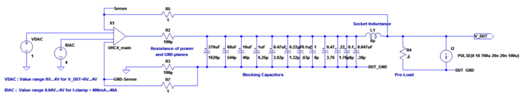
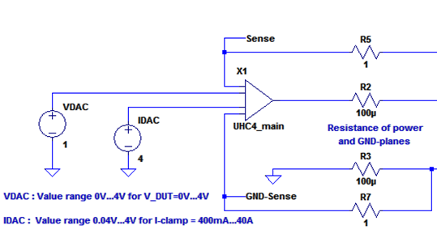
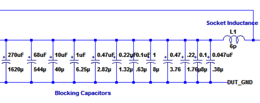
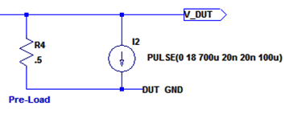
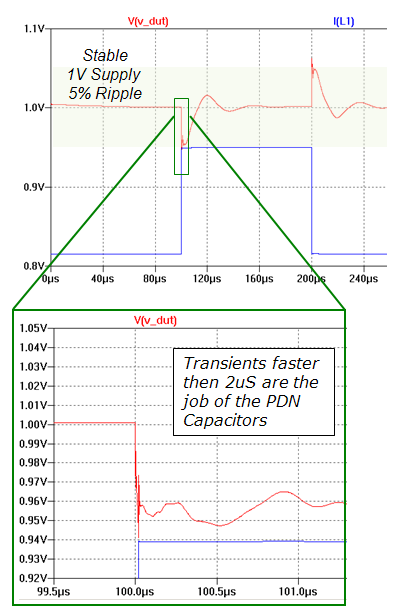

Step 5: Simulation and verification
This is the last of five steps in the Power Distribution Network (PDN) design. Use the UHC4 / UHC4T impedance calculation spreadsheet to semi-automate your design process.
|
To increase design accuracy in meeting required specifications, and to increase confidence levels prior to start manufacturing the DUT board, we highly recommend to use LT-Spice IV (see http://www.linear.com/search/search.php?q=LT-Spice%20IV).
The company, Linear Technology offers many additional tools: videos, articles and other examples.

UHC4 / UHC4T Spice Model
This LT-Spice model simulates the behavior of one channel of the UHC4- / UHC4T-PDN.
For the simulation add line impedances and inductances as well as all capacitors with their ESR and ESL.
|
4 ganged channels |
1 channel |
|---|---|---|
Total current (cell D13 - Max DUT Current) |
140 A |
37.5 A |
Cbulk |
8000 μF |
2000 μF (8000 μF / 4) |
Total ESR |
0.5 mΩ |
2 mΩ (0.5 mΩ * 4) |
Total ceramic capacitance |
200 μF |
50 μF (200 μF / 4) |
The number of ganged channels does not change the values in the calculation spreadsheet cells for Supply Voltage (D12), Max Droop Voltage (D14), and Max Current Transient (D15).

Capacitors and Socket Models

Load Step

UHC4 / UHC4T PDN 1V 90A 80% socket

Functional changes
- Introduced in SmarTest 7.2.1